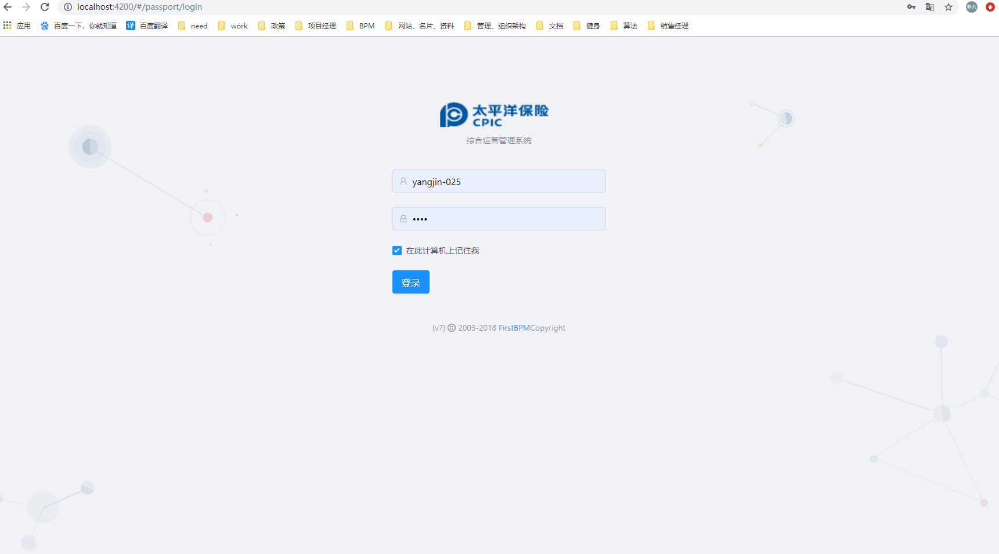

前端项目开发
我们的前端项目是用NG-ALAIN企业级中后台前端/设计解决方案脚手架。
需要掌握的技术栈包含：Typescript、Angular、g2、@delon 和 ng-zorro-antd,想要更好的掌握项目的前端开发，了解掌握这些知识是非常有必要的。
这里具体的NG-ALAIN的使用可以看官网教程：https://ng-alain.com/zh
此文档，目的是帮助你们更加快速上手和开发项目；
- 了解目录结构
- 如何新建表单
- 表单开发及注意事项
整个前端的开发很简单，并不需要你了解很多东西，主要是在表单的开发上。
了解目录结构
我们主要了解src下的目录内容，其他的部分有兴趣的可以自己研究下。
src
│ ├── app # 项目开发的所有页面组件
│ │ ├── actions
│ │ ├── common
│ │ ├── core # 核心模块
│ │ │ ├── http # 后台加载模块
│ │ │ ├── net
│ │ │ │ └── default.interceptor.ts # 默认HTTP拦截器
│ │ │ ├── services # *** 所有的表单页面 ***
│ │ │ ├── startup # 用于刚启动时获取所需要的基础数据等
│ │ │ └── core.module.ts # 核心模块文件
│ │ ├── epics #
│ │ ├── layout # 通用布局
│ │ ├── models #
│ │ ├── reducers #
│ │ ├── routes #
│ │ │ ├── ** # 业务目录
│ │ │ ├── routes.module.ts # 业务路由模块
│ │ │ └── routes-routing.module.ts # 业务路由注册口
│ │ ├── shared # 共享模块
│ │ │ └── shared.module.ts # 共享模块文件
│ │ ├── store #
│ │ ├── app.component.ts # 根组件
│ │ └── app.module.ts # 根模块
│ │ └── delon.module.ts # @delon模块导入
│ ├── assets # 本地静态资源
│ ├── environments # 环境变量配置
│ │ ├── environment.hmr.ts # 热加载
│ │ ├── environment.prod.ts # 生产环境
│ │ └── environment.ts # 测试环境
│ ├── styles # 样式目录
└── └── style.less # 样式引导入口
运行
npm start
启动完成后访问浏览器 http://localhost:4200, 如果出现这个画面说明成功了; 